Project Minder
A local-only dev dashboard that auto-scans your projects and surfaces the context you need — without leaving your browser.
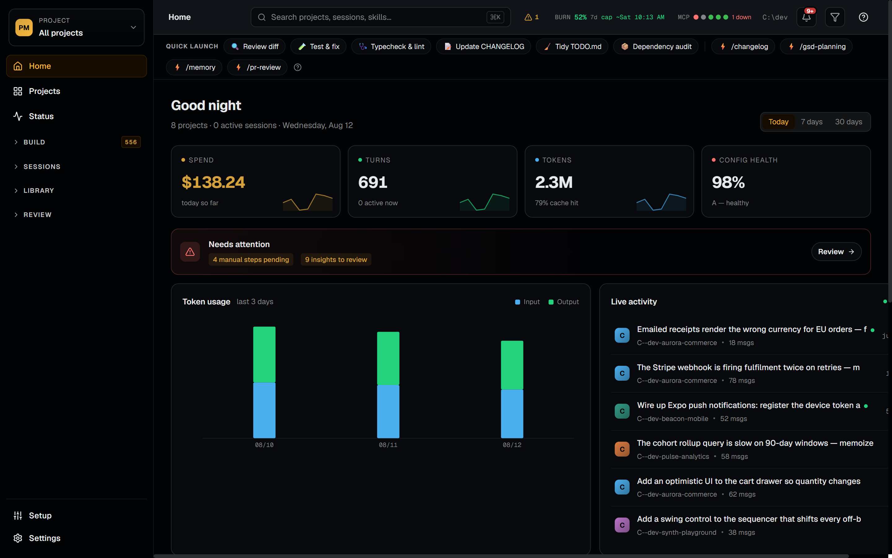
A local-only dev dashboard that auto-scans your projects and surfaces the context you need — without leaving your browser.

Auto-scans one or more dev directories in parallel and renders every project as a card — git branch, dirty-file count, tech stack, and status at a glance. Background git checks populate amber +N indicators as results arrive. Search, filter by status, and sort across all projects in seconds. Hide noisy projects via the three-dot menu and restore them from the dashboard footer. Multiple scan roots let you monitor projects across different drives or locations from a single dashboard.
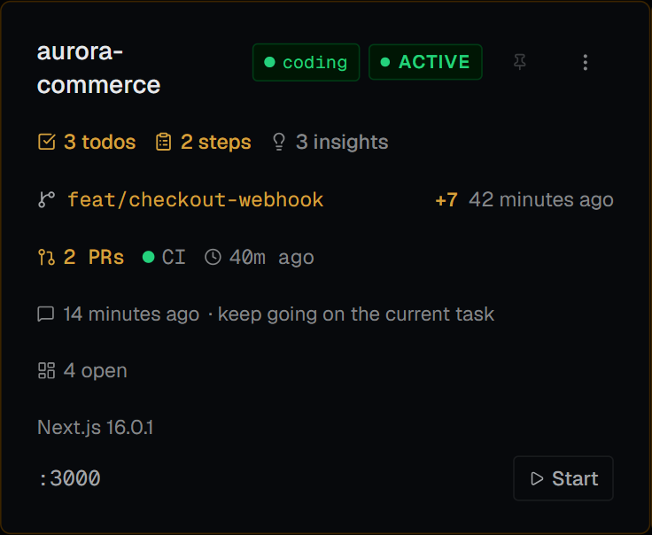

Dashboard cards show a live green "coding" or amber "waiting on you" badge when a Claude session is active — inferred from the JSONL tail and refreshed automatically every 15 seconds. The Sessions browser supports full-text content search across message bodies (not just prompts), auto-refreshes without a manual reload, and highlights matched snippets inline. Session recaps — written by Claude Code's /recap command — surface as the primary session label with an amber badge, with full recap history on the detail page. Session timelines render fenced code blocks and inline code spans. Insights extraction scrapes ★ Insight blocks from conversation history into searchable per-project files. The Usage dashboard breaks down token spend by model, project, and 13 activity categories — worktree sessions are merged into their parent project — with CSV/JSON export.
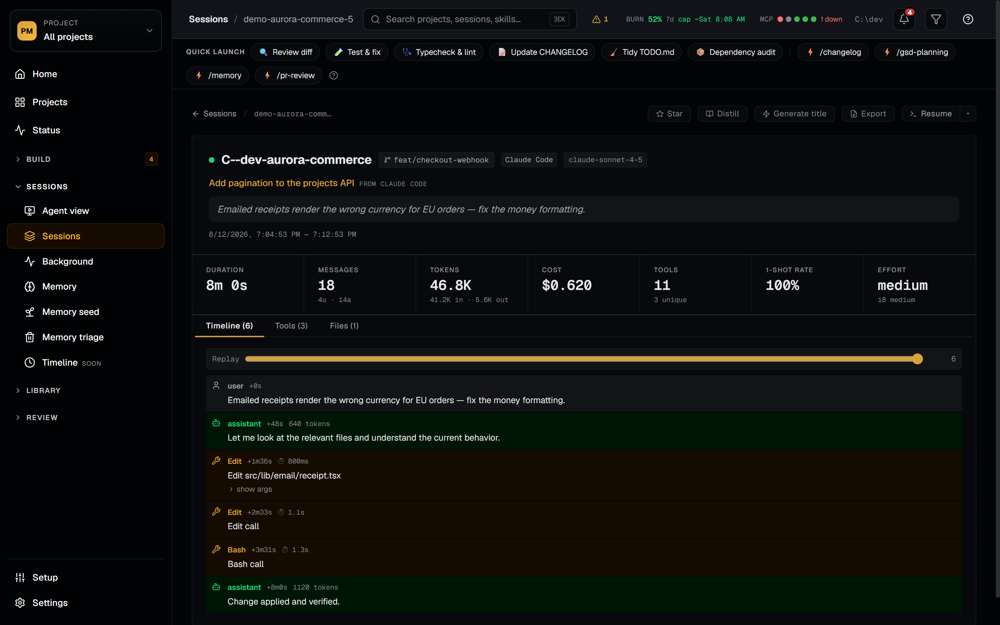


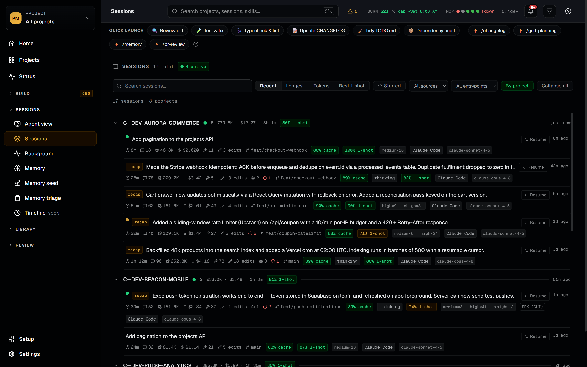
Every Claude Code agent persona and slash skill on your machine, indexed in one place. Project Minder walks ~/.claude/, ~/.agents/, every installed plugin, and per-project .claude/ folders to build a unified catalog with usage counts, last-invoked timestamps, and full provenance. Marketplace badges show where each item came from with version and commit SHA — and an amber dot appears the moment an upstream update lands, checked in the background via git ls-remote and the GitHub tree API on a 24-hour TTL. Expand any row to see tools, model, body excerpt, recent sessions, and per-row actions: open source, show in folder, copy URL / SHA / path, re-check. Per-project tabs split Available from Invoked here so you can see which agents and skills you actually use on each repo.

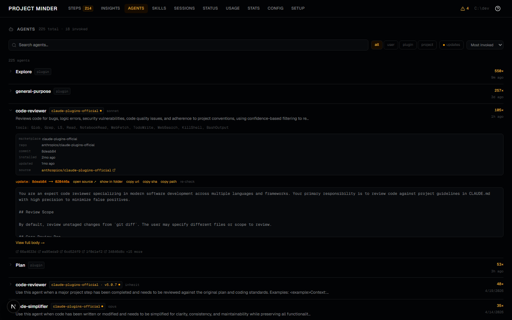
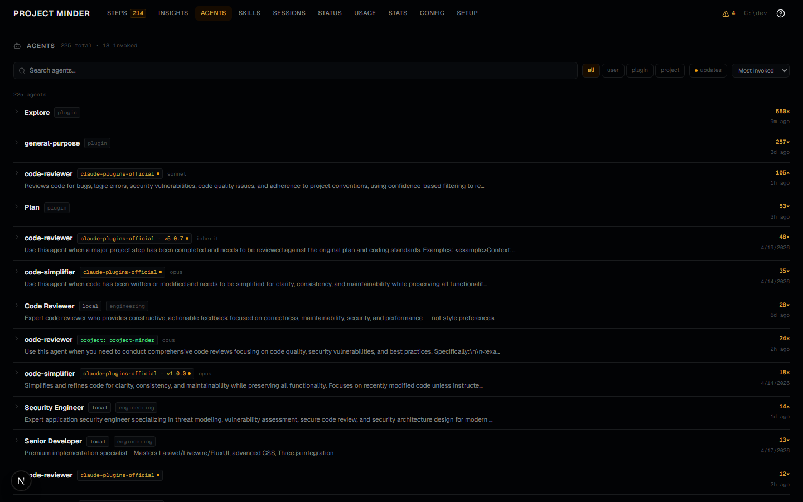
The System Status page gives you a real-time cross-project view of every active Claude Code session — bucketed into Needs Approval, Working, Waiting for You, and Other/Stale. Status is inferred from the JSONL tail every 3 seconds using a cross-poll mtime heuristic: stalled write-type tools signal a pending permission prompt; a clean end_turn means Claude is waiting for your reply. Worktree sessions appear labeled by branch. The nav badge counts how many sessions need your attention right now.
The Memory tab on each project detail page surfaces Claude Code's auto-memory files — MEMORY.md rendered as a structured overview, with individual memory files listed by type (user, feedback, project, reference) and full on-demand content rendering.
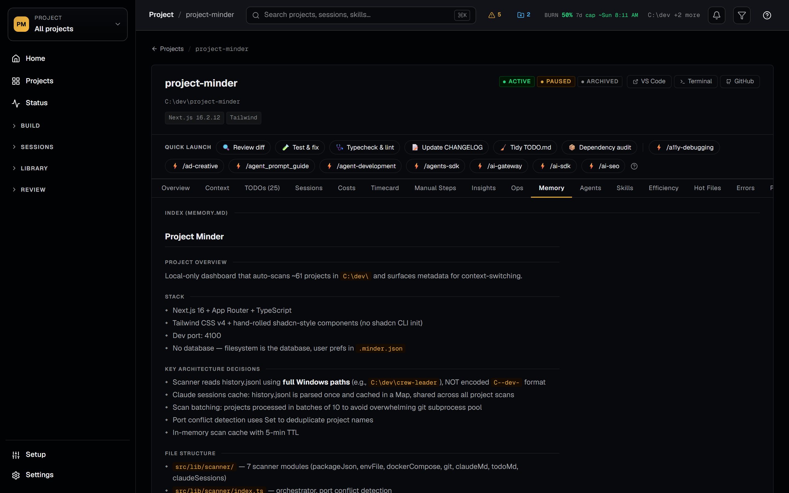
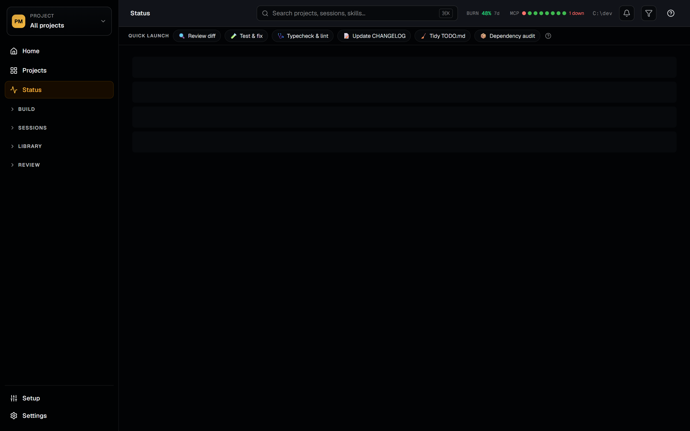
TODO tracking reads each project's TODO.md — click any item to check it off directly in the UI, add new ones inline, or use the cross-project Quick Add modal (Shift+T) to append ideas to multiple projects at once. The Manual Steps tracker surfaces MANUAL_STEPS.md entries across all projects with interactive checkboxes that toggle on disk. A file watcher fires toast and OS notifications when Claude adds new steps mid-session. Worktree overlay surfaces TODOs, Manual Steps, and Insights from active Claude Code worktrees in collapsible sections on project detail pages.
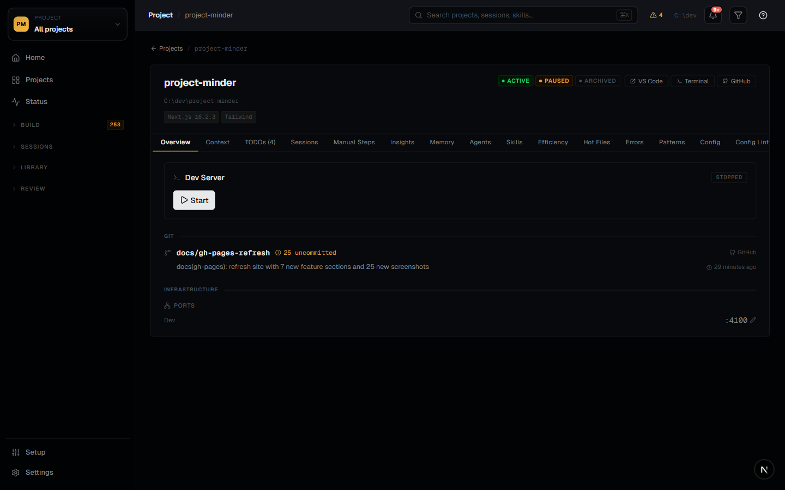

The Stats dashboard gives a portfolio-wide overview: tech stack distribution, project health, and Claude Code usage across all sessions. Dev server control lets you start, stop, and restart managed servers from the UI with live stdout/stderr output. The Setup guide provides copy-paste CLAUDE.md instruction blocks and Claude Code hooks — apply them to any managed project with one click.

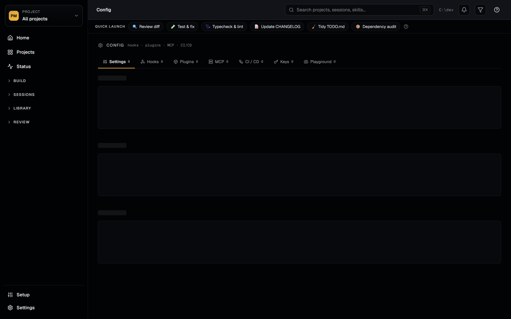
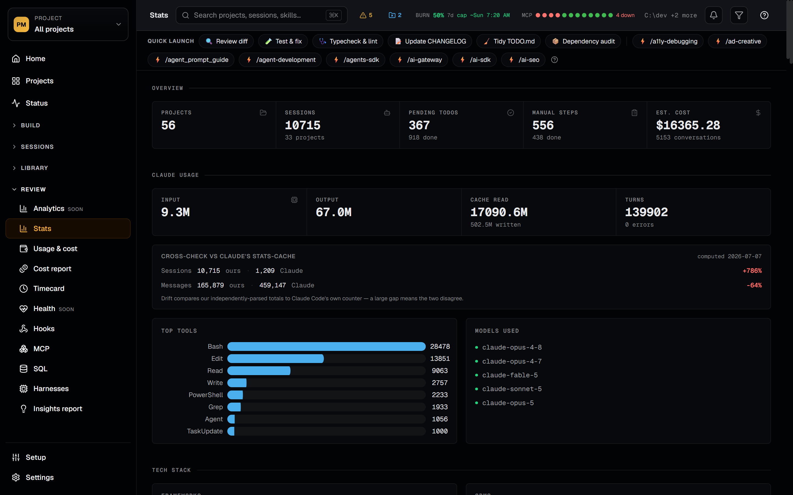
git clone https://github.com/joshuatownsend/project-minder.git
cd project-minder
npm install
# create .minder.json in the repo root:
# { "devRoots": ["~/dev"] } (Windows: "C:\\dev")
npm run dev # open http://localhost:4100Prerequisites: Node.js ≥ 20.19 · macOS, Linux, or Windows